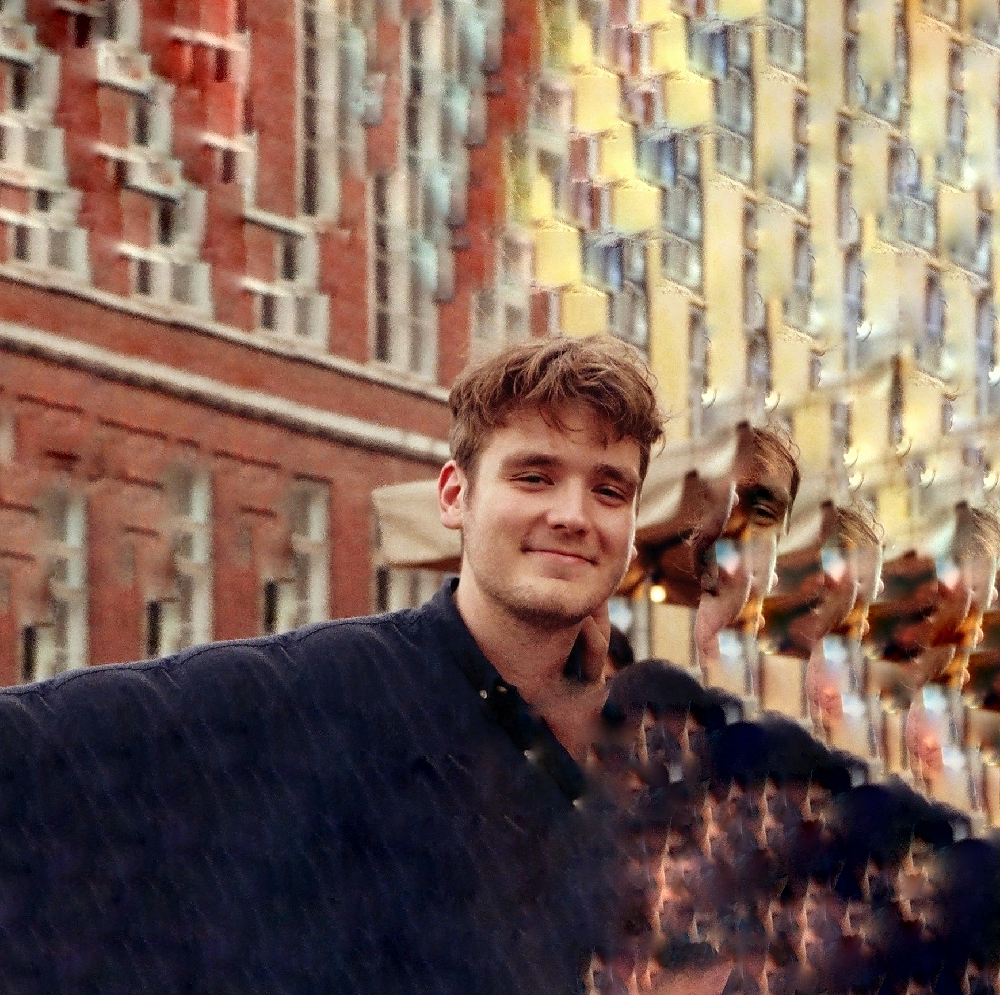

Om mig

Mit navn er Oliver, jeg er 24 og bor i Virum 🤟
Jeg valgte at starte på KEA som multimediedesigner, fordi jeg gerne ville kombinere mine kreative og tekniske kompetencer.
Før KEA gik jeg på den Europæiske Filmhøjskole, hvor jeg bl.a. arbejdede meget med manuskriptskrivning, filmfotografering, og animation.
Sick Skillz
- Ableton Live
- Adobe Photoshop
- Adobe Illustrator
- Adobe Premiere
- Adobe After Effects
- Blender
Nye kompetencer efter 1. semester:
- HTML, CSS
- Grundlæggende javascript
- Adobe XD
- Webudviklings-gruppearbejde